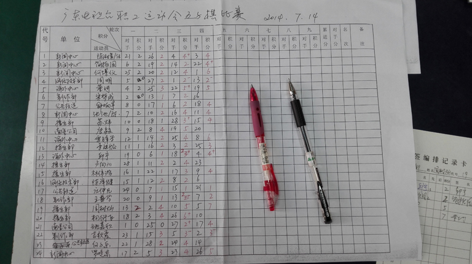
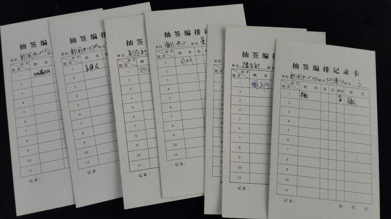
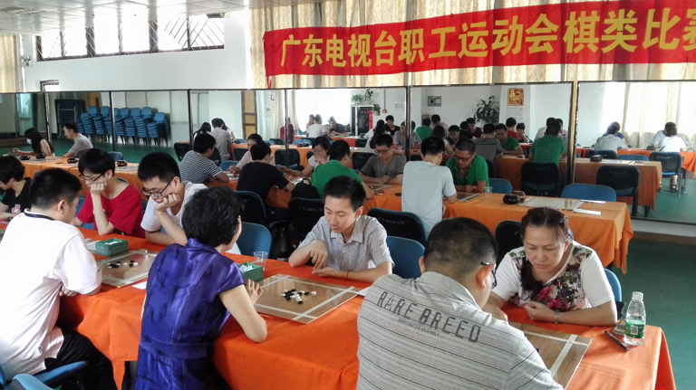
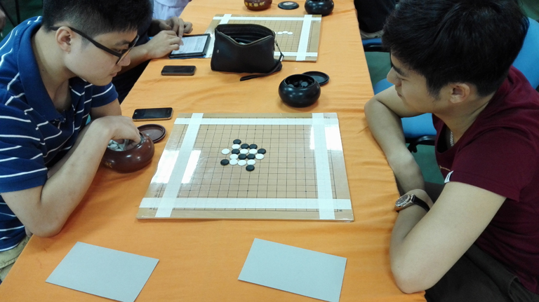
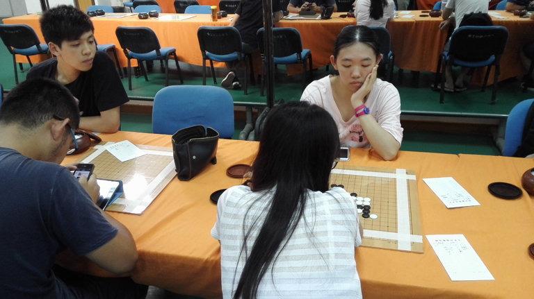
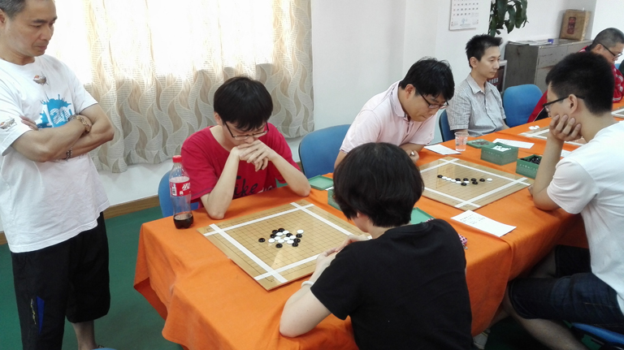
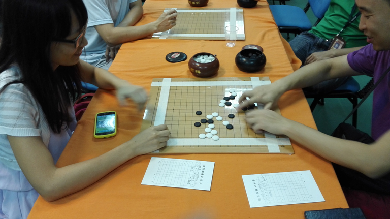

广东电视台职工运动会五子棋比赛
#1 广东电视台职工运动会五子棋比赛 作者：无尽 发表时间：2014-7-16 7:52:14
今年广东电视台职工运动会五子棋比赛刚刚结束，我会受邀继续组织比赛、担任裁判。据了解，职工运动会共有8个项目，棋类占了两个，分别是五子棋、象棋，而举办了十几年的围棋从去年开始因报名人数太少而取消。今年五子棋报名36人，最终到场30人。象棋比赛则20多人参加。比赛采用原始规则，双方各一盘先手。编排方式为完全手工编排，以前用惯软件，完全没有经验，不过几轮下来，也学到一些快速编排的技巧，据说围棋国家级裁判考核就要能进行上百人的手工编排。电视台比赛难处理的地方就是各个部门经常有各种事情，部分人无法从头参加到尾，这给组织编排增加困难。从交流中感受到，五子棋应该是简单快速的观念根深蒂固，不过也正是这样的特点，可能更容易让现代处于紧张生活方式的人们参与。即使是民间规则，普通爱好者也还是能从中找到自己的乐趣。本届比赛也是广东电视台最后一届职工运动会，因为今年4月广东台已经与南方电视台合并而成广东广播电视台。






［此帖子已被 无尽 在 2014-7-16 8:39:59 编辑过］
［ 伤情路同学于 2014-7-16 17:40:24 时花20金币送鲜花一朵］
［ 伤情路同学于 2014-7-16 17:40:24 时花20金币送鲜花一朵］
［ 伤情路同学于 2014-7-16 17:40:24 时花20金币送鲜花一朵］
［ 清缘同学于 2014-7-16 17:45:51 时花20金币送鲜花一朵］
［ 清缘同学于 2014-7-16 17:45:51 时花20金币送鲜花一朵］
［ 清缘同学于 2014-7-16 17:45:51 时花20金币送鲜花一朵］
［ 清缘 于 2014-7-16 17:46:35 时奖励此帖[金币加 100 威望加1］
#2 Re:广东电视台职工运动会五子棋比赛 作者：尕孩 发表时间：2014-7-16 8:46:06
會長sama辛苦曬！手工編排。。睇起身好大工程。。有MM！！#3 Re:广东电视台职工运动会五子棋比赛 作者：华夏使者 发表时间：2014-7-16 10:19:56
漂亮女主播呢？怎么一个也没见着。#4 Re:华夏使者【==Re:广东电视台职工运动会五子棋比赛==】 作者：无尽 发表时间：2014-7-16 10:45:46
引用：
原文由 华夏使者 发表于 2014-7-16 10:19:56 :
漂亮女主播呢？怎么一个也没见着。
只可远观，不可拍照。
#5 Re:广东电视台职工运动会五子棋比赛 作者：伤情路 发表时间：2014-7-16 17:40:50
看不到漂亮女主播就算了，还阿勒勒地看不到龙叔。。
#6 Re:广东电视台职工运动会五子棋比赛 作者：清缘 发表时间：2014-7-16 17:44:57
龙叔为了世界杯决赛，放弃了漂亮的女主播，真球迷